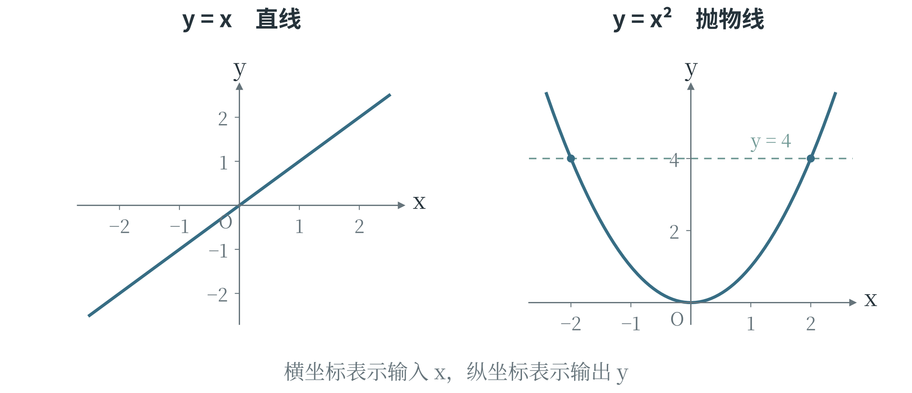
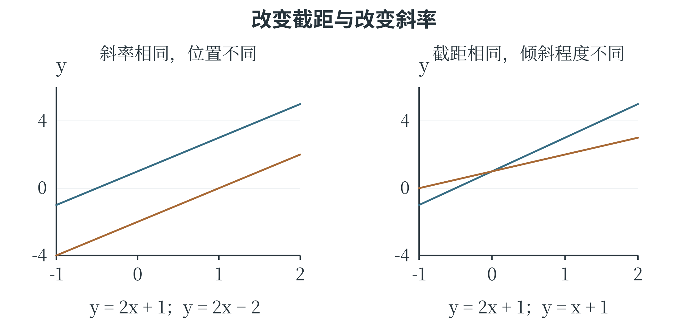

3.3 代数、方程与函数
用字母表达数量关系
一次计算可以用具体数字写清，许多次计算中共同的规律则适合用字母表达。例如，每个文件占用 2 MB，另有一个固定占用 5 MB 的说明文件。若有 3 个普通文件，总大小为 \(2\times3+5=11\) MB；若有 8 个，总大小为 \(2\times8+5=21\) MB。用 \(x\) 表示普通文件的个数，两个算式便可以统一写成 \(2x+5\)。这里的 \(x\) 是变量，表示可以取不同值的量；固定的 2 和 5 是常量。式子中乘在变量前面的数称为系数，\(2x\) 的系数就是 2。数学中常省略数字与字母之间的乘号，\(2x\) 表示 \(2\times x\)；写成 Python 代码时，这个乘号要用 * 明确写出。把变量换成一个具体数并计算，称为代入求值。计算 \(2x+5\) 在 \(x=3\) 时的值，就是把式子中的 \(x\) 换成 3。使用数量关系时还要留意变量能取什么值：文件个数可以是 0、1、2 等整数，不能是 \(-3\) 或 2.5；若 \(x\) 表示测得的长度，就可能取 2.5 这样的数。式子的计算规则相同，实际问题允许的取值却未必相同。
人工智能模型也常用字母表达计算规则。一个最简单的数值预测模型可以写成 \(y=kx+b\)：\(x\) 是输入，\(y\) 是输出，\(k\) 和 \(b\) 控制模型怎样计算。对于一个已经确定的模型，\(k\)、\(b\) 是固定的数；比较或训练不同模型时，它们又可以调整。这类用于确定模型具体形式的量称为参数。因此，“变量”“常量”“参数”要结合所讨论的过程理解，不能只凭字母长什么样来区分。
读懂带下标和求和号的公式
数据一多，用 \(x_1,x_2,\ldots,x_n\) 表示比为每个数另取一个字母方便。右下角的数字或字母叫作下标，用来区分第几项；\(x_2\) 表示第 2 个数，不是 \(x\) 的平方。这里 \(n\) 表示数据个数，\(x_i\) 表示第 \(i\) 个数。它们的和可以简写为：
符号 \(\sum\) 是求和号，下方的 \(i=1\) 指从第 1 项开始，上方的 \(n\) 指到第 \(n\) 项结束。例如，\(x_1=2\)、\(x_2=3\)、\(x_3=7\) 时，从第 1 项加到第 3 项，结果就是 12。式子看起来多了几个符号，实际动作仍是依次相加。平均数常记为 \(\bar{x}\)，读作“\(x\) 上横线”，于是平均数的计算可以写为：
这与“总和除以个数”完全相同。求和号把一长串加法收在一个式子里，下标则交代每次要取哪个数。还原成具体数据后，紧凑的公式便能读成一步步计算。
读公式时先展开几项
求和号前后的运算位置会改变含义。设 \(x_1=1\)、\(x_2=3\)，先平方再相加，得到 \(x_1^2+x_2^2=1+9=10\)；先相加再平方，则得到 \((x_1+x_2)^2=4^2=16\)。写成求和号时，前者是 \(\sum_{i=1}^{2}x_i^2\)，后者是 \((\sum_{i=1}^{2}x_i)^2\)。求和号只是一种简写，括号仍然决定哪些对象一起参与下一步计算。
带下标的公式也可以还原成表格。假设三条记录的真实值分别为 2、4、6，预测值分别为 3、4、4，用 \(y_i\) 表示第 \(i\) 条真实值，用 \(\hat y_i\) 表示对应预测值；上方的小帽子提示这是估计或预测结果。要计算 MSE，就需要对每条记录先求差、再平方，最后求平均。
表 3-4 将误差公式展开为逐条计算
| 记录 i | 真实值 | 预测值 | 误差的平方 |
|---|---|---|---|
| 1 | 2 | 3 | (3−2)²＝1 |
| 2 | 4 | 4 | (4−4)²＝0 |
| 3 | 6 | 4 | (4−6)²＝4 |
这里分母为 3，因为共有三条参与评价的记录；第二条的误差虽然为零，仍然是一条记录。若把三条误差先相加再平方，就会得到另一种量，不能再称为这批记录的均方误差。读到一个紧凑公式时，先代入两三条数据，便能检查下标、括号和计算顺序是否都理解正确。
方程怎样求解
如果总大小已经知道，反过来求文件个数，就需要方程。方程是含有未知数的等式，等式中的未知数是等待求出的量。沿用前面每个普通文件占 2 MB、说明文件占 5 MB 的条件，已知总大小为 21 MB，就有 \(2x+5=21\)。求解的目标是找到使等式成立的 \(x\)。等式两边同时减去 5，再同时除以 2，得到：
这些变形依靠等式的基本性质：两边加上或减去同一个数，等式仍然成立；两边乘以同一个非零数，或者除以同一个非零数，也保持相等，并且可以还原回原来的等式。除数不能是零，因为除以零没有定义。将 \(x=8\) 代回原式，左边为 \(2\times8+5=21\)，与右边相同，便完成了检验。数学中的等号表示两边相等，含义与 Python 中用于赋值的单个 = 不同。
只有一个未知数、整理后能写成 \(ax+b=0\) 且 \(a\ne0\) 的方程，称为一元一次方程。上面的 \(2x+5=21\) 可以写成 \(2x-16=0\)，就属于这一类。“元”指未知数的个数；这里的“一次”表示未知数以 \(x\) 的形式出现，没有被平方或立方。
若一个问题有两个未知数，通常需要两个相互配合的等式。例如，\(x+y=10\)、\(2x+4y=28\) 组成一个方程组，要求同一对 \(x\)、\(y\) 同时满足两个等式。把第一个等式两边都乘 2，得到 \(2x+2y=20\)；再用第二个等式减去它，便有 \(2y=8\)，所以 \(y=4\)，代回得到 \(x=6\)。这个过程把两个未知数暂时减少为一个，称为消元。
用不等号连接的式子称为不等式。例如，\(2x+5\leq15\) 表示 \(2x+5\) 不超过 15，其解为 \(x\leq5\)。与方程相比，不等式往往允许一整段范围内的数。
两边加减同一个数，不等号方向保持不变；两边乘除同一个正数，方向也不变；乘除同一个负数时，方向必须反转。例如 \(2<5\)，同时乘 \(-1\) 后是 \(-2>-5\)。因此，解 \(-2x<6\) 时，两边除以 \(-2\)，结果是 \(x>-3\)。若题目中的 \(x\) 是文件个数，还应把代数计算的结果与非负整数这一实际要求合在一起考虑。
平方、平方根与二次方程
一个数连续乘自身若干次，可以用乘方简写，乘方的结果称为幂。\(x^2=x\times x\) 读作“\(x\) 的平方”，\(x^3=x\times x\times x\) 读作“\(x\) 的立方”。在 \(x^3\) 中，\(x\) 是底数，3 是指数。括号决定哪些部分一起乘方：\((-2)^2=4\)，而 \(-2^2=-(2\times2)=-4\)。
像 \(3x^2-5x+6\) 这样的式子，可以看成 \(3x^2\)、\(-5x\)、6 三部分相加，每一部分称为一项。用常数、变量的正整数次幂以及它们的乘积组成这样的项，再将若干项相加，得到的式子称为多项式。只含一个变量时，一项中变量的指数就是这一项的次数：\(3x^2\) 是二次项，\(-5x\) 是一次项，6 是不含变量的常数项。字母及其指数相同的项称为同类项，可以合并计算，例如 \(2x^2-x^2=x^2\)。先合并同类项，再看系数不为零的各项，其中最高的次数就是多项式的次数。因此，\(3x^2-5x+6\) 是二次多项式；前面的 \(2x+5\) 则是一次多项式。
乘方也可以反过来问：哪个数的平方等于 9？3 和 \(-3\) 都满足要求，都是 9 的平方根。其中非负的一个称为算术平方根，用根号表示，写作 \(\sqrt{9}=3\)。所以，\(x^2=9\) 有两个解 \(x=3\) 和 \(x=-3\)，但 \(\sqrt{9}\) 本身只表示 3。0 的平方根只有 0。
像 2 这样的数也有平方根，只是不能写成两个整数的比；\(\sqrt{2}\) 约为 1.414。这些数和整数、分数一起属于实数，都可以在数轴上表示。数轴是规定了原点、正方向和单位长度的直线，每个实数都对应其中的一个点。任何实数的平方都不小于零，因此 \(x^2=-1\) 没有实数解；本章求解方程时只讨论实数范围。
整理后形如 \(ax^2+bx+c=0\)、且 \(a\ne0\) 的方程，称为一元二次方程。它的未知数最高次数为 2。某些二次方程可以把左边改写成两个式子的乘积，这种改写称为因式分解。例如：
把右边的括号展开，得到 \(x^2-3x-2x+6\)，合并后正好是左边的式子。因此，\(x^2-5x+6=0\) 等价于 \((x-2)(x-3)=0\)。两个实数相乘为零，至少有一个为零，于是 \(x-2=0\) 或 \(x-3=0\)，得到两个解 2 和 3。方程的解也称为方程的根。
有些二次方程不容易直接分解因式，可以使用通用的求根公式：
符号 \(\pm\) 读作“正负”，表示分别取加号、减号计算。对于 \(x^2-5x+6=0\)，\(a=1\)、\(b=-5\)、\(c=6\)，代入后得到 \(x=(5\pm1)/2\)，仍然是 3 和 2。
根号内的 \(b^2-4ac\) 称为判别式，常记作 \(\Delta\)：大于零时有两个不同的实数根；等于零时两个根相等；小于零时没有实数根。这里的 \(a\ne0\)，既保证方程是二次的，也保证公式的分母不为零。若题目另有取值限制，还应据此筛选求出的根。例如要求 \(x>2\) 时，上面两个根中只有 3 符合。
函数描述输入与输出的关系
当输入在允许的范围内取每一个值时，都有唯一确定的输出与它对应，这样的关系称为函数。例如 \(y=2x+1\)，给定 \(x=0\)，输出只能是 1；给定 \(x=3\)，输出只能是 7。也可以写成 \(f(x)=2x+1\)，其中 \(f\) 是函数的名称，\(f(3)\) 表示输入为 3 时的函数值，不表示 \(f\) 乘以 3。所有允许输入的值构成函数的定义域。函数要求的是“一个输入对应一个输出”，并不要求“不同输入一定对应不同输出”。在 \(f(x)=x^2\) 中，输入 2 和 \(-2\) 都得到 4，这仍然是函数。相比之下，如果对同一个输入，规则没有说明应从几个不同输出中选哪一个，就还不能确定一个函数。
数学函数用于描述这种对应关系；Python 的函数则是一段可以调用的程序，除了计算数值，还可能读写文件、显示文字。两者有联系，含义并不完全相同。
\(y=kx+b\) 是常见的函数形式。当 \(k\ne0\) 时，它称为一次函数；\(k=0\) 时，输出始终为 \(b\)，称为常数函数。在允许的输入范围内，\(x\) 每增加 1，\(y\) 就增加 \(k\)，所以 \(k\) 控制变化快慢和方向：\(k>0\) 时随输入增加而增加，\(k<0\) 时随输入增加而减小。\(b\) 是输入为零时的输出。这正好解释了本节开头那个简单模型的两个参数各起什么作用。二次函数 \(y=x^2\) 的变化则不一样：\(x\) 从 1 增到 2，输出增加 3；从 2 增到 3，输出增加 5，输入每次增加相同的量，输出的增量并不固定。
还有一类函数把变量放在指数的位置，如 \(y=2^x\)。当 \(x\) 依次为 1、2、3、4 时，输出为 2、4、8、16，每增加 1，输出就乘以 2，称为指数增长。为了使乘方的运算规律继续成立，规定非零数的零次方等于 1，负整数次方等于相应正整数次方的倒数，如 \(2^0=1\)、\(2^{-2}=1/4\)。指数函数也可以接受非整数输入，其更完整的运算方法会在后续数学学习中展开。
人工智能的一些公式使用 \(e^x\)。其中 \(e\) 是一个固定的数学常数，约为 2.71828，\(e^x\) 是以它为底的指数函数。若反过来求“\(e\) 的多少次方等于一个正数”，就用自然对数表示：\(\mathrm{ln}(y)=x\) 表示 \(e^x=y\)。例如 \(\mathrm{ln}(1)=0\)、\(\mathrm{ln}(e)=1\)；这里要求 \(y>0\)。自然对数与指数把相反的两个计算方向联系起来，这种关系会在后面的模型公式中用到。
用坐标画出函数
函数的变化可以画出来。为此，需要先约定怎样在纸上表示一对数。取两条互相垂直的数轴，分别作为 \(x\) 轴和 \(y\) 轴，交点称为原点，记作 \(O\)；通常向右是 \(x\) 轴的正方向，向上是 \(y\) 轴的正方向。这样建立的图形称为平面直角坐标系，也称平面笛卡尔坐标系。两条轴把平面分成四个区域，称为四个象限，从右上方开始逆时针依次编号；坐标轴上的点不属于任何一个象限。
点的位置用有顺序的数对 \((x,y)\) 表示，第一个数称为横坐标，第二个称为纵坐标。例如，点 \((1,2)\) 在原点右侧 1 个单位、上方 2 个单位的位置；点 \((-1,2)\) 则在原点左侧 1 个单位、上方 2 个单位的位置。两个数的顺序不同，表示的位置也可能不同，所以 \((1,2)\) 与 \((2,1)\) 不能混用。横纵轴可以采用不同单位，也可以采用不同的显示比例，读图时应按各自的刻度判断数值。
对于一个函数，把每个允许的输入 \(x\) 与对应的输出 \(f(x)\) 配成点 \((x,f(x))\)，所有这样的点就组成它的函数图像。例如，\(y=x^2\) 在输入为 \(-2\)、\(-1\)、0、1、2 时，输出分别为 4、1、0、1、4，对应五个点 \((-2,4)\)、\((-1,1)\)、\((0,0)\)、\((1,1)\)、\((2,4)\)。这些点帮助确定曲线的位置；输入还可以取 0.5、1.2 等更多数值，整条图像包含的点远不止五个。
一次函数 \(y=kx+b\) 的图像是一条直线，反映输入每增加相同的量，输出也改变相同的量。二次函数 \(y=ax^2+bx+c\)（\(a\ne0\)）的图像则称为抛物线：\(a>0\) 时开口向上，\(a<0\) 时开口向下。图 3-4 比较了 \(y=x\) 和 \(y=x^2\)。右图中，从原点向左右两侧走，曲线都逐渐升高，而且越来越陡。直线与抛物线的区别，使一次、二次这两类数量关系有了直观的形状。

方程的求解也能从图像上理解。右图中的水平虚线表示 \(y=4\)，它与 \(y=x^2\) 相交于 \((-2,4)\) 和 \((2,4)\)。两个交点的横坐标 \(-2\)、2，正好是方程 \(x^2=4\) 的两个根。若把式子改写成 \(x^2-4=0\)，也可以画出 \(y=x^2-4\)：它是原来的抛物线整体向下移动 4 个单位，与 \(x\) 轴相交处的横坐标仍是这两个根。求根因此可以转化为寻找图像的交点；代数计算则能把图上观察到的位置求得更准确。前面用于计算误差的平方，也是这样的二次关系。用 \(r\) 表示误差，\(r^2\) 随 \(r\) 变化的图像是一条开口向上的抛物线，最低点对应误差为零。公式给出计算规则，图像则帮助看清这种变化的整体趋势。
从图像观察参数的作用
在 \(y=kx+b\) 中，参数并不是只供代入的字母。固定 \(k=2\)，把 \(b\) 从 1 改成 \(-2\)，每一个输入对应的输出都减少 3。因此，直线 \(y=2x-2\) 可以由 \(y=2x+1\) 整体向下移动 3 个单位得到，两条线彼此平行。再固定 \(b=1\)，比较 \(y=x+1\) 与 \(y=2x+1\)，两条线都经过 \((0,1)\)，但输入每增加 1，输出分别增加 1 和 2。

直线的倾斜程度可用斜率描述。对不与纵轴平行的直线，任取两个横坐标不同的点，纵坐标的变化量除以横坐标的变化量，得到同一个比值；在 \(y=kx+b\) 中，这个比值就是 \(k\)。例如，\((1,3)\) 与 \((3,7)\) 都在 \(y=2x+1\) 上，斜率为 \((7-3)/(3-1)=2\)。这里比较的是坐标的数值变化，若绘图时把一条轴压缩，直线在纸上看起来会变陡或变平，但由坐标算出的斜率没有改变。
参数与输入在图中的角色也有区别。固定一组 \(k\)、\(b\)，沿直线移动，表示输入在变化；改变 \(k\) 或 \(b\)，则会得到另一条直线，表示模型的计算规则发生变化。第六章训练线性回归模型时，会根据一批观测点调整参数，让预测线更贴近数据。这里先看清参数怎样改变图像，后面便能理解训练程序究竟在调整什么。